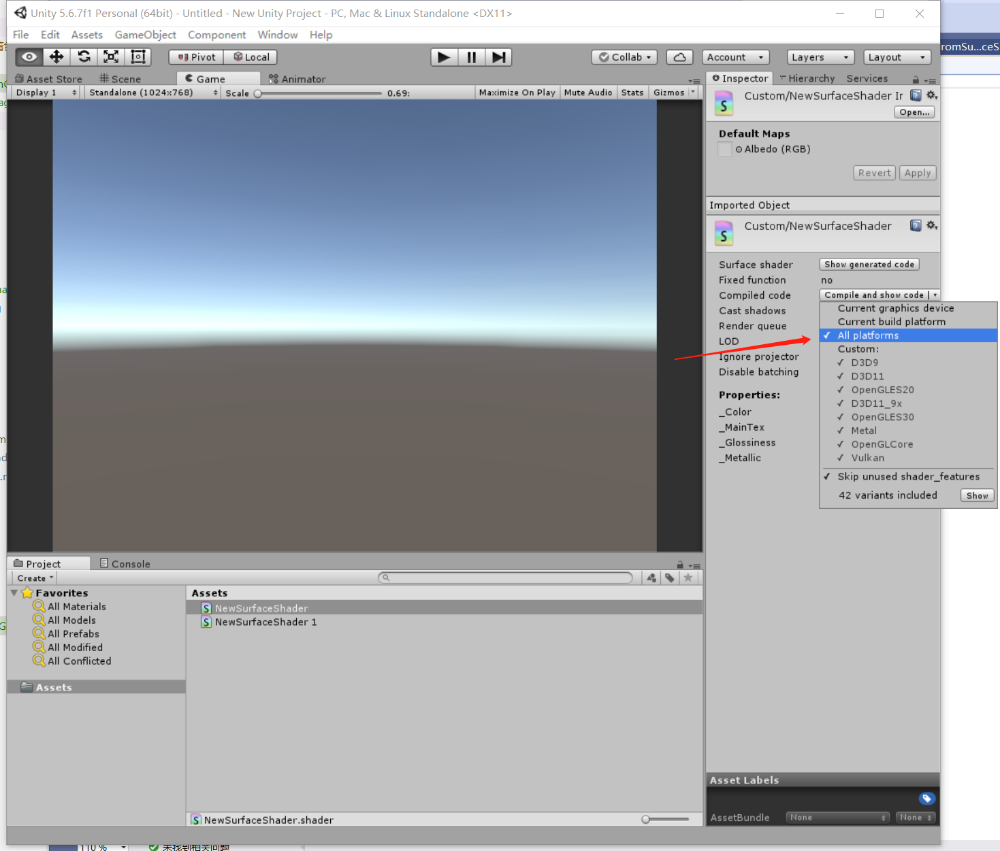

4.2 Unity Shader和OpenGL Shader
上一节提到，OpenGL Shader是配套出现的， Vertex Shader(顶点着色器)、Fragment Shader(片段着色器)，两者缺一不可。
但是我用了20年Unity都没有见过类似的代码，这是咋回事，Unity跳过OpenGL自己实现了图形库吗？
1. Unity Shader类型
打开Unity，新建Shader。
{kind=link}
在Unity中，可以创建4种Shader。
- Standard Surface Shader
- Unlit Shader
- Image Effect Shader
- Compute Shader
这4种Shader，是对一套特定功能的Vertex Shader、Fragment Shader组合，取的名字。
以C语言为例，我们编写多个C语言代码，可以编译出各种程序，如收银台程序、聊天程序、游戏程序，每一种程序都针对特定功能。
用编写的Vertex Shader、Fragment Shader，也可以编译得到各种程序，如无光照的GPU程序、有光照的GPU程序、特效程序，每一种程序都针对特定功能。
Unity中可选的4种Shader，每一种都是针对特定功能，每一种都是由不同的Vertex Shader、Fragment Shader组成。
2. Unity Shader代码
上面说，Unity Shader是由Vertex Shader、Fragment Shader组成，那就是说，Unity Shader里面的代码由Vertex Shader、Fragment Shader拼起来咯？
在 3.绘制简单图形 这一章的配套项目里，ShaderSource.h 就是由 Vertex Shader 和 Fragment Shader 拼起来的，那Unity Shader也是如此吗？
创建一个 Standard Surface Shader，观察代码，发现结构完全不一样，连 入口 main 函数都没有!
Shader "Custom/NewSurfaceShader" {
Properties {
_Color ("Color", Color) = (1,1,1,1)
_MainTex ("Albedo (RGB)", 2D) = "white" {}
_Glossiness ("Smoothness", Range(0,1)) = 0.5
_Metallic ("Metallic", Range(0,1)) = 0.0
}
SubShader {
Tags { "RenderType"="Opaque" }
LOD 200
CGPROGRAM
// Physically based Standard lighting model, and enable shadows on all light types
#pragma surface surf Standard fullforwardshadows
// Use shader model 3.0 target, to get nicer looking lighting
#pragma target 3.0
sampler2D _MainTex;
struct Input {
float2 uv_MainTex;
};
half _Glossiness;
half _Metallic;
fixed4 _Color;
// Add instancing support for this shader. You need to check 'Enable Instancing' on materials that use the shader.
// See https://docs.unity3d.com/Manual/GPUInstancing.html for more information about instancing.
// #pragma instancing_options assumeuniformscaling
UNITY_INSTANCING_CBUFFER_START(Props)
// put more per-instance properties here
UNITY_INSTANCING_CBUFFER_END
void surf (Input IN, inout SurfaceOutputStandard o) {
// Albedo comes from a texture tinted by color
fixed4 c = tex2D (_MainTex, IN.uv_MainTex) * _Color;
o.Albedo = c.rgb;
// Metallic and smoothness come from slider variables
o.Metallic = _Metallic;
o.Smoothness = _Glossiness;
o.Alpha = c.a;
}
ENDCG
}
FallBack "Diffuse"
}
这是因为，我们在Unity中写的Shader代码，并不是标准的OpenGL Shader，而是NVIDIA开发的Cg语言。
Cg语言可以由工具，转换成OpenGL Shader，或者DX Shader，毕竟Unity是跨平台引擎，如果没有Cg语言，那每一种功能的Shader既要写OpenGL的，又要写DX的，要累死程序员了。
3.Unity Shader转OpenGL Shader
Unity中选中创建的Shader，在Inspector里，打开Shader编译平台设置，修改为 All platforms。

{kind=link}
点击Compile and show code 将Unity Cg Shader文件转为OpenGL Shader。
转换完成后自动打开，搜索 glcore，定位到转换后的代码。
{kind=link}
这就是转换出来的Vertex Shader代码，看到入口 main 函数了。